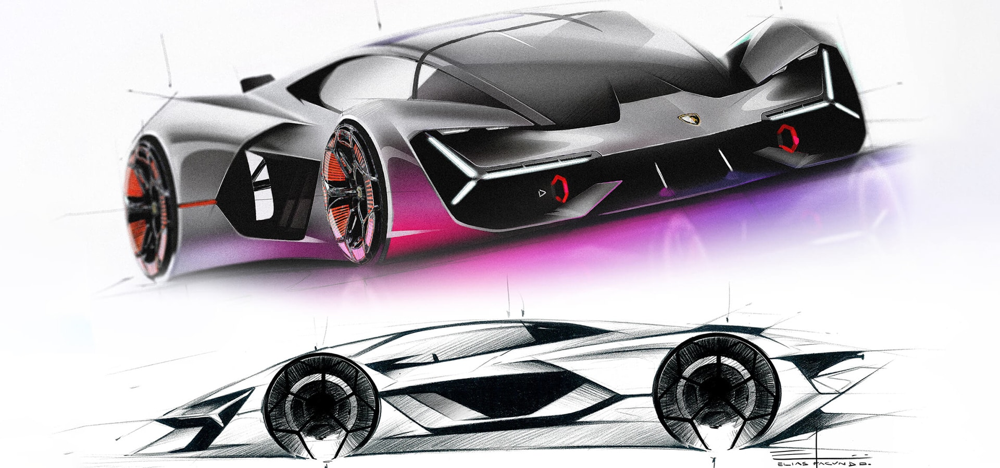

Founded in 1963, Automobili Lamborghini is headquartered in Sant’Agata Bolognese, in Northern Italy.Lamborghini currently produces two super sports car models, the V12-powered Aventador, launched in 2011, and the V10-powered Huracán, launched in 2014, along with the Urus Super SUV powered by a twin-turbo V8 engine, launched in 2017. For over half a century Automobili Lamborghini created a continuous series of dream cars, including the 350 GT, Miura, Espada, Countach, Diablo, and Murciélago, as well as limited editions such as the Reventón, Sesto Elemento, Veneno and the Centenario. With the unveiling in 2019 of the Lamborghini Sián FKP 37, a few-off build of only 63 units, the company delivers unique new hybrid technologies, featuring the world-first application of a supercapacitor for hybridization, new materials technology, and unsurpassed Lamborghini performance. In 2021 Lamborghini dedicated itself to the Countach for its 50th anniversary. A limited and futuristic edition of the super sports car, the iconic Countach LPI 800-4 boasts a revolutionary design and is a technology rule-breaker.
GALLERY